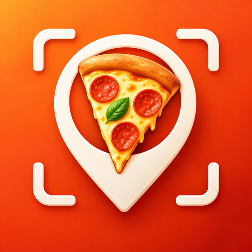

PizzaScan
Pizza und italienische Orte finden · Fotoanalyse lokal auf deinem Gerät
PizzaScan 2.3.23 · Build 58
Installierbare Android-APK mit automatischer Browser-/Gerätespracherkennung und vollständiger UI-Lokalisierung.
d08a3c968740801d5993a901bed09a6ee51db999bb722f299ea058d292f03bf2
Was ist neu?
Karte und Vollbildkarte verwenden dieselben POIs. GPS scannt automatisch den sichtbaren Ausschnitt. Popup, Besuch, Rezension und Ortsdetail teilen denselben Live-Wert. Alle Status-, Lade-, Menü- und Dropdown-Texte folgen der gewählten Sprache.
Sprachen
Automatisch ausgewählt werden Deutsch, Englisch, Italienisch, Spanisch, Französisch, Portugiesisch, Niederländisch, Polnisch, Türkisch, Russisch, Japanisch, Chinesisch, Koreanisch und Arabisch. Die Auswahl bleibt lokal gespeichert und kann jederzeit geändert werden.
| App | GitHub-Seite |
|---|---|
| Automatische Gerätesprache + Auswahl in den Einstellungen | Diese Seite erkennt die Browsersprache automatisch. |